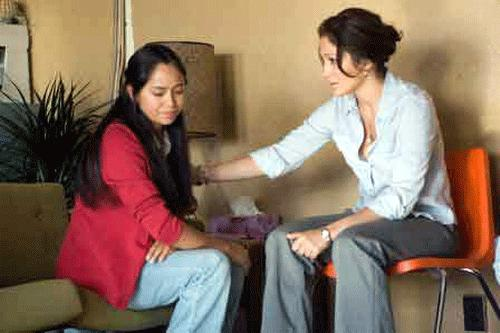

بر اساس “NAFTA” موافقت نامه تجاری امریکای شمالی که با عضویت کانادا، مکزیک و ایالات متحده ی امریکا شکل گرفته است، در مرز مکزیک، کارخانه هایی با نام " ماکویلادورا" وجود دارند که مواد و تجهیزات را بر اساس تعرفه ی آزاد و معاف از مالیات وارد می کنند سپس محصولات مونتاژ شده را به کشورهای مبدا، مجددا صادر می کنند. هر 3 ثانیه یک تلویزیون و هر 7 ثانیه یک کامپیوتر در این کارخانه ها تولید می شود. بیشتر کارگران، زنان هستند که به دلیل شکیبایی زیاد، وضعیت بد اقتصادی با دستمزدهای پایین برای ساعتهای متمادی کار می کنند. آنها مجبورند مسافتی طولانی را تا محل کار طی کنند. با اینکه بیشتر کارخانه های مزبور شبانه روزی هستند و دختران جوان در راه برگشت به خانه، مورد حمله و تجاوز قرار می گیرند اما هیچ اقدامی در جهت تامین امینت جانی آنها توسط کارخانه ها صورت نمی گیرد. "در خوارز، بیش از یک دهه است که هزاران زن کشته و بیش از 370 نفر دیگر نیز مورد تجاوز قرار گرفته اند".*
دختران بی شماری هیچ گاه به خانه باز نمی گردند و جسد برهنه آنها در بیابانهای اطراف پیدا می شود. هیچ کس پاسخگو نیست. اماEl Sol de Juárez روزنامه ای محلی، در این میان خاموش نمی ماند. دیاز (آنتونیو باندارس) مسوول روزنامه، به طور آشکارا به بررسی و اعتراض در مورد قتلها و تجاوزات و وضعیت بد زنان کارگر کارخانه ها می پردازد. روزنامه توسط دولتمردان سرمایه دار و شریک در کارخانه ها بارها مورد تهدید قرار گرفته و از پیشخوان دکه های روزنامه فروشی جمع می شود. دیاز برای سکوت تحت فشار قرار می گیرد. از سوی دیگر، لورن آدرین (جنیفر لوپز) گزارشگر خبری "Chicago Sentinel" که به شدت علاقه مند به تهیه ی گزارشی از جنگ عراق است برای دستیابی به چنین فرصتی، نخست باید تهیه ی گزارشی از وضعیت زنان کارگر کارخانه های ماکویلادورا را بپذیرد. او که خود زاده ی مکزیک است و خاطرات خوبی از دوران کودکی اش ندارد، برای دست یابی به اطلاعات کاملتر به سراغ دیاز، دوست قدیمی اش می رود.
ایوا (مایا زاپاتا)، دختر جوان کارگر، طی حوادثی، در راه بازگشت به خانه، قربانی تجاوز و خشونت می شود. او در حالیکه به گمان متجاوزان مرده بود، به طور معجزه آسایی زنده می ماند و همراه با مادر خود و زنی دیگر به دفتر روزنامه می رود. دیاز در افشاگری مردد است اما لورن پافشاری می کند و این گونه به کمک ایوا آرام آرام به سوی حقیقت پیش می روند.

ایوا، بسیار آسیب دیده است، سایه ی متجاوزین را به دنبال خود می بیند. لورن، علی رغم میل باطنی اش درگیر ماجرایی می شود که هدفی فراتر از حرفه ای عمل کردن را برایش تعریف می کند. پشت پرده ی دنیای سرمایه داری، توافق نامه های تجاری امریکا گسترش می یابند. رسانه ها با وعده های رنگین توسط مقامات دولتی خریداری می شوند. نویسندگان تهدید و تریبونهای حقیقت گو روز به روز بیشتر به انزوا کشیده می شوند. لورن گوری دسته جمعی را کشف می کند. سایه های تهدید نزدیک تر می شوند اما "Chicago Sentinel" حاضر به چاپ حقایق نمی شود. این در حالی ست که ایوا به پشتوانه ی انتشار گزارش لورن حاضر به شکایت شده و دادگاه او نزدیک است. سردبیر لورن، فرصتی در اختیار وی قرار می دهد تا به آرزوی دیرینه اش، اعزام به عراق دست یابد. آنها معتقدند اکنون زمان تجارت آزاد است. اما لورن که برای دریافت حقیقت، پا به پای قربانیان پیش رفته است می گوید: " این تجارت آزاد نیست. برده داری ست. زور گفتن به ضعفاست". و در نهایت زمانی که روزنامه، مسوولیت صنفی را به افشای حقایق ترجیح می دهد، لورن، خود قدم به میدان می گذارد.
شهر مرزی، ساخته ی گرگوری ناوا، کارگردان فیلمهای مطرحی چون، سلنا، فریدا و برنده ی جوایز متعدد جهانی، است. این فیلم امریکایی – انگلیسی سعی در بیان واقعیتهای جهان سرمایه داری و تجارت آزاد دارد و می خواهد وضعیت بد کارگران را به دنیا نشان دهد. یک ساعت و پنجاه و یک دقیقه، بیننده را در جایگاه دختران کارگر خوارز قرار می دهد که در دنیای ناامن برای زندگی تلاش می کنند و در حالیکه سود فراوانی را برای صاحبان کار خود دارند، از حداقل امکانات برخوردار نیستند. آنها به سادگی طعمه ی افرادی می شوند که در ازای دستمزدی کم، برده داری را به شیوه ای نوین ترویج می دهند. و دولتها نیز در این میان به گسترش منابع مالی خود می پردازند.
شهر مرزی در فوریه 2007 به معرض نمایش درآمد. جنیفر لوپز، علاوه بر ایفای نقش لورن، تهیه ی فیلم را نیز بر عهده داشت. وی در چهاردهم فوریه، جایزه ی ویژه ی فستیوال فیلم برلین را از "Jose Ramos-Horta" برنده ی جایزه ی صلح نوبل، دریافت کرد. همچنین این فستیوال، جایزه ی خرس طلایی را به گرگوری ناوا اهدا کرد.
* به نقل از وب سایت زنان خوارز: http://womenofjuarez.egenerica.com